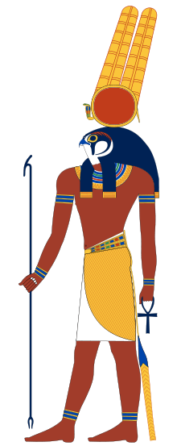
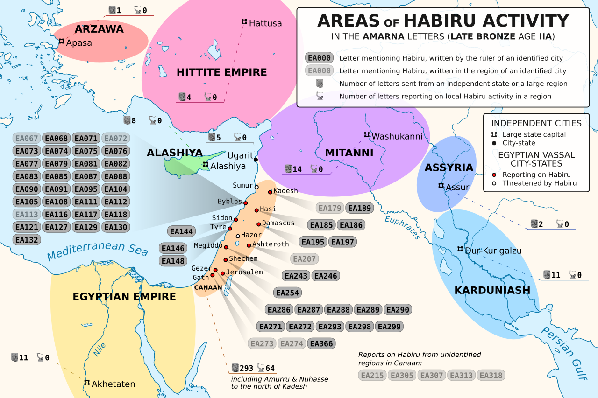

Hebrew is Bantu
The original hebrew script did not have vowels so the vowels differ the most because theyre the easiest to change when you have the wrong people claiming the language.
The original hebrew script did not have vowels so the vowels differ the most because theyre the easiest to change when you have the wrong people claiming the language.
“m†is derived from the heiroglyph corresponding to water ripples this is why nearly every African language has the “m†sound in the corresponding words for water. Water is the source of life this is why, the prefix “mu”/“mo†is used for living people and things and has also influenced words corresponding to mother and women.
thaba/thabo tab heiroglyph
𓉐𓈖𓆓𓆙𓊖𓊽𓁶
M,N,B,T, Chi
𓈖 M -
𓉐 B
𓆓 N
𓊖 T
letter of the
Paternal and maternal haplogroups are genetic markers
that reveal your paternal and maternal lineages 
the modern Hebrew spoken by the fake jews today was standardised in the 1900s and the letters have been modified from the original "proto-sinaitic"/"paleo-Hebew" scripts derived from Heiroglyphs created, since the orginal writing systems did not have vowels, the vowels associated with modern Hebrew words has also varied.(add reversals, permutations)
| Original Hebrew | English Meaning | Region / Language example | True Phonetics | Modern Fake Hebrew |
|---|---|---|---|---|
| 𐤁𐤍 | Sons / Children of | South / Central Africa | Banna/Bana | Bnei |
| 𐤍𐤅𐤍 | Child / Heir / seed | Sepedi | Ngwana | Nun |
| ğ¤ğ¤Šğ¤…𤌠| Divine wisdom / God knows | Igbo | Chukwuma | Chokmah |
| 𐤎𐤓 | Hill | Chitonga | Chiru / Chirundu | Jeru |
| 𐤍𐤔 | Prince | Nguni / Ethiopian | Nkosi / Negus | Nasi |
| 𐤍𐤊 | River | Sepedi | Noka | Nahar |
| 𐤁𐤍𐤅 | Look | Southern Africa | Bona | Pana |
| 𐤑𐤁 | watch | Sepedi | Sheba | Sapa |
| ğ¤ğ¤ğ¤“𤃠| Travel / Separate from | Sepedi / Swahili | Sepela / Safari | Sephardi |
| ğ¤Œğ¤„𤓠| Dowry | Luganda / Swahilli | Mahare | Mohar |
| 𐤒𐤐 | Kgola | |||
| 𐤎𐤕 | Judah | Chatta | ||
| 𐤑𐤇𐤊 | ||||
| 𐤕𐤓 | Speak | Taura | Torah | |
| 𐤃𐤌 | Blood | Bamileke / Swahilli | Dam / Damu | Dam |
| 𐤌𐤓𐤍 | Lords | Marena | Moron | |
| 𐤊𐤐𐤌 | ||||
| 𐤑𐤋𐤊 | Angel / Messenger | Kuku | Mulökö | malach |
| 𐤌𐤈 | branch | |||
| ğ¤ğ¤“𤊠| bless | Swahilli | Bariki | barak |
| 𐤓𐤁𐤑 | sleep | Sepedi | robatsa | |
| 𐤁𐤄 | Cook | Sepedi | Pheha | apa |
| 𐤋𐤐 | Family | Sepedi | lapa | elep |
| 𐤋𐤄 | ||||
| 𐤄𐤊𐤋 | temple | Hekalu | Swahilli | Hekal |
| ğ¤Œğ¤‘𤓠| Red Sandstone / Biblical Egypt | Maseru | Sesotho | Misri |
| ğ¤Œğ¤‘𤓠| Destroy / Break | Paradza | Shona | Peretz |
| ğ¤‹ğ¤„𤌠| ||||
The Hebrews or "Ḫabiru" / "ḫabatu" in the middle east were described as nomads, raiders and people who were not part of their cultural society. . The Egyptian/Kemetic word for the same people was "Montu" that they symbolised with the falcon of Horus/Heroes. Montu was celebrated in Egypt for attacking the enemies of truth and divine order. Due to the ignorance of Western Academia, the meaning of "montu" has been reduced to "nomad" and its true symbolism has been discarded as "mythology". The truth is that Bantu/Abantu are descended from Montu, "Montu" is just the singular of "Bantu". The colonisation of Egypt and destruction of their story has tainted his-story and the world has forgotten who the true story tellers are, but the truth still lives in the scriptures and our language even though the Hero-glyphs have become a Missed-story.
Hebrew is derived from heiroglyphs, jews left Egypt, bantu language shows relations to both
 These all correspond to the heiroglyph of a snake which is where the letters corresponding to “N†of various writing systems come from, The snake used to be on Kushite/Egyptian crowns this is what the Zulu and Ndebele umqhele is based on. The Egyptian crowns were not actually crowns but rather hair accessories that often can only fit on African hair you can watch here to see how the many “crowns†have influenced the cultures of today. It is already an academic fact that the semitic scripts are descended from hieroglyphs, and all the writings systems are derived from semitic scripts. Hieroglyphs represent a writing system where each character has its own meaning and sound and thus by combining the different hieroglyphs you can create words that have new meaning based on the combined sounds and symbols. This is why in Isaiah 36:11 The language of the Hebrews is described as the language of the “people of the wall”, this is a reference to the fact that hieroglyphs were written on walls and the people who spoke the language were often depicted on the same walls, this makes sense considering the Hebrews came from Egypt. The “Bantu†language all have class systems dividing the vocabulary because the different classes correspond to different prefixes and the prefixes are descended from the original hieroglyphs, this is why the languages have what linguists call an “agglutinative†structure, where the addition of individual sounds can add meaning to a sentence. The letter “m†is derived from the heiroglyph corresponding to water ripples this is why nearly every African language has the “m†sound in the corresponding words for water, water is the source of life this is why, the prefix “mu”/“mo†is used for living people and things and has also influenced words corresponding to mother and women because they are the source of life. The prefix “ba”/“aba†comes from the hieroglyph representing an enclosure because the family/ community lived in such structures, it is symbolic of a grouping. This has influenced the words associated with men and fathers since they are typically the protector/leaders of such structures.